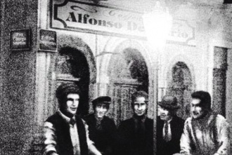
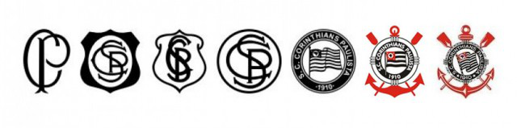

Sport Club Corinthians Paulista
Sport Club Corinthians Paulista é um clube poliesportivo brasileiro da cidade de São Paulo, capital do estado de São Paulo. Foi fundado como uma equipe de futebol no dia 1 de setembro de 1910 por um grupo de operários do bairro Bom Retiro. Seu nome foi inspirado no Corinthian FC de Londres, que excursionava pelo Brasil.
Suas cores tradicionais são o branco e o preto. Desde 2014, manda suas partidas de futebol na Neo Química Arena. Seus rivais históricos são o Palmeiras, com quem disputa o Derby Paulista; o São Paulo, com quem disputa o Majestoso; e o Santos, com quem disputa o Clássico Alvinegro. Sua torcida é conhecida como "Fiel"[14] e seus torcedores são estimados em aproximadamente 30 milhões espalhados por todo o Brasil e pelo mundo, atrás nacionalmente somente do carioca Flamengo.a sua torcida é considerada também uma das maiores torcidas do mundo.
Fundação
Em 1 de setembro de 1910, um grupo de cinco operários (Joaquim Ambrósio, Antônio Pereira, Rafael Perrone, Anselmo Correa e Carlos Silva) do bairro paulistano Bom Retiro, sob a luz de um lampião, às oito e meia da noite, decidiram criar um novo time de futebol, além de mais oito pessoas que contribuíram com 20 mil réis e também foram considerados sócios-fundadores. A ideia surgiu depois de assistirem à atuação do Corinthian FC, equipe inglesa de futebol fundada em 1882, que excursionava pelo Brasil. Os ingleses eram chamados pela imprensa da época de "Corinthian's Team", mas o time brasileiro só seria batizado "Sport Club Corinthians Paulista" depois de muita discussão e algumas reuniões. O presidente escolhido por eles foi o alfaiate Miguel Battaglia, que já no primeiro momento afirmou, "O Corinthians vai ser o time do povo e o povo é quem vai fazer o time". Da primeira arrecadação de recursos à compra da primeira bola de futebol do clube pouco tempo se passou, na verdade, apenas uma semana. Um terreno alugado na Rua José Paulino foi aplainado e virou campo, e foi lá que, já no dia 14 de setembro, o primeiro treino foi realizado diante de uma plateia entusiasmada que garantiu: "Este veio para ficar". De partida em partida o time foi se tornando famoso, mas era ainda um time de várzea.
Fundadores do Corinthians Reunidos na esquina das ruas José Paulino e Cônego Martins
Escudo
Ao contrário da camisa, o escudo do Corinthians passou por várias alterações ao longo dos anos. Enquanto o time disputava apenas amistosos e torneios de futebol de várzea, a camisa não tinha distintivo. O primeiro foi criado às pressas para o jogo contra o Minas Gerais, válido pela eliminatória para a Liga Paulista de Foot-Ball de 1913, e levava apenas as letras "C" e "P" (de Corinthians e Paulista) enlaçadas.[158] Esse escudo seria usado até o ano seguinte, quando Hermógenes Barbuy, litógrafo e irmão do jogador Amílcar, criou o primeiro escudo oficial, elaborando uma moldura para as letras e acrescentando o "S" (de Sport), que estreou no amistoso contra o Torino (Itália), em São Paulo.
Pouco tempo depois a moldura fica maior, e a partir de 1919 o distintivo começa a ganhar o formato atual, com a bandeira do Estado de São Paulo ao centro. Em 1937, o presidente Getúlio Vargas baixou o Estado Novo e fez uma cerimônia pública com a queima das bandeiras de todos os Estados da federação, pois queria um governo forte e centralizado. A bandeira paulista só sobreviveu dentro do escudo do Corinthians. Após a queda do regime, o uso de símbolos regionais foi liberado.[158] Em 1939, o escudo ganhou uma boia rodeando o círculo, além de um par de remos e a âncora, em alusão ao sucesso do clube nos esportes náuticos. O desenho foi criado pelo pintor modernista Francisco Rebolo, que foi jogador do segundo quadro do Corinthians na década de 1920. Depois disso, o símbolo corintiano passou por pequenas alterações ao longo do tempo, como na bandeira e na moldura.Abaixo, a evolução dos escudos, desde a fundação até os dias atuais:
Evolução dos escudos do Corinthians até os dias atuais
Hino do Corinthians
Hino do Corinthians foi criado pelo Benedito Lauro D'Ávila em 1953
Principais Títulos
- Libertadores: 1
- Mundial: 2
- Campeonato Brasileiro: 7
- Copa do Brasil: 3
- Campeonato Paulista: 30